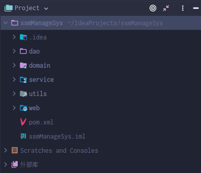
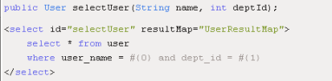
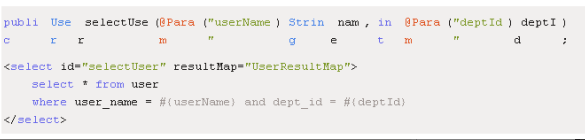
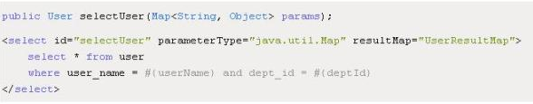
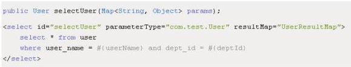

项目中遇到的问题->
1.maven项目的结构
项目结构是通过maven分模块建立的，基本用法详见maven高级-分模块构建工程
项目的结构：

dao、domain、service、web、utils都分模块拆开。注意父工程和子模块的关系pom建立。
2.静态资源的过滤
三种静态资源过滤方式：
- 传统方式(涉及spring-mvc.xml)
<mvc:resources location="/WEB-INF/images/" mapping="/images/**"/>
<mvc:resources location="/WEB-INF/js/" mapping="/js/**"/> - 拦截器中增加针对静态资源不进行过滤(涉及spring-mvc.xml)
<mvc:resources location="/" mapping="/**/*.js"/>
<mvc:resources location="/" mapping="/**/*.css"/>
<mvc:resources location="/assets/" mapping="/assets/**/*"/>
<mvc:resources location="/images/" mapping="/images/*" cache-period="360000"/>
<mvc:interceptors>
<mvc:interceptor>
<mvc:mapping path="/**/*"/>
<mvc:exclude-mapping path="/**/fonts/*"/>
<mvc:exclude-mapping path="/**/*.css"/>
<mvc:exclude-mapping path="/**/*.js"/>
<mvc:exclude-mapping path="/**/*.png"/>
<mvc:exclude-mapping path="/**/*.gif"/>
<mvc:exclude-mapping path="/**/*.jpg"/>
<mvc:exclude-mapping path="/**/*.jpeg"/>
<mvc:exclude-mapping path="/**/*login*"/>
<mvc:exclude-mapping path="/**/*Login*"/>
<bean class="com.luwei.console.mg.interceptor.VisitInterceptor"></bean>
</mvc:interceptor>
</mvc:interceptors>- 使用默认的静态资源处理Servlet处理静态资源(涉及spring-mvc.xml, web.xml)
在spring-mvc.xml中启用默认Servlet
<mvc:default-servlet-handler/>在web.xml中增加对静态资源的处理
<servlet-mapping>
<servlet-name>default</servlet-name>
<url-pattern>*.js</url-pattern>
<url-pattern>*.css</url-pattern>
<url-pattern>/assets/*"</url-pattern>
<url-pattern>/images/*</url-pattern>
</servlet-mapping>但是当前的设置必须在Spring的Dispatcher的前面
- 修改Spring的全局拦截设置为*.do的拦截（涉及web.xml）
<servlet>
<servlet-name>SpringMVC</servlet-name>
<servlet-class>org.springframework.web.servlet.DispatcherServlet</servlet-class>
<init-param>
<param-name>contextConfigLocation</param-name>
<param-value>classpath:spring-mvc.xml</param-value>
</init-param>
<load-on-startup>1</load-on-startup>
<async-supported>true</async-supported>
</servlet>
<servlet-mapping>
<servlet-name>SpringMVC</servlet-name>
<url-pattern>*.do</url-pattern>
</servlet-mapping>第2种方案配置比较臃肿，多个拦截器时增加文件行数，不推荐使用；第3种方案使用默认的Servlet进行资源文件的访问，Spring拦截所有请求，然后再将资源文件交由默认的Sevlet进行处理，性能上少有损耗；第4种方案Spring只是处理以’.do’结尾的访问，性能上更加高效，但是再访问路径上必须都以’.do’结尾，URL不太文雅；
3.为何dispatcher扫描的是*.do？
*.do为了静态资源的拦截不受限制。见上一个问题
*.do是STRUTS遗留的风格。
.do 文件是在项目里面进行配置的一个标记，比如：<form action="login.do" method=post>这是用于提交表单的动作，最终还是调用的 .jsp 文件
在MVC的项目中一般不会直接去访问JSP，都是通过.do来转发。
这样做的好处是：
1 所有请求全部通过action来转发，这样便于整体框架的处理。比如，可以加入登陆到某个页面的权限控制，只需要在配置文件中配置，而不用再每个JSP文件中加入相关的逻辑。
2 与数据库，文件等底层存储层连接，读取数据的代码可以在类（action）中执行。这样做，一方面可以将很多方法复用，另一方面使JSP页面的代码变得简单而容易维护。
3 其实.do也就是MVC当中的C,是控制器。在整个系统中起到中央枢纽的作用。先通过它的话就可以把逻辑代码隐藏在后台，使JSP文件作为单纯的VIEW分离出来，降低了系统的耦合性。
比如说regist.do对应的就是regist.jsp这个页面,通过网页可能所有的跳转都是跳到regist.do去注册,但实际上直接输入regist.jsp应该也是可以打开一样的页面去注册”？
回答：没错，的确是可以的。不过这样做的话扩展性就没有先经过.do那样好。比如以后系统里加入了新的要求，只有权限大于5的人才能进入这个页面。直接访问.jsp的方法的话，要在jsp里加入判断的代码，如果权限小于5的话跳转到其他画面；不过如果只是这一张页面还好，但是如果系统有200张jsp，而且每张jsp要求的权限都不一样的话，这样修改起来就很困难了。用.do转发的方法的话，可以在配置文件中配置访问每个action所需要的权限，然后在系统的中央处理器（servlet）里面加入一个判断，去校验每个用户的session，从里面取得当前用户的权限并且与action的需要权限相对比，如果不匹配就直接跳到其他页面。这样不管整个系统有多少张页面，只要有这个配置，当用户需求发生变化时只要改改配置文件就可以完成任务了。
“什么时候该用.do什么时候用.jsp呢?还是,一般只有首页,比如登陆就用.jsp,而除了这张页面以外,其他的业务处理都最好用.do来实现???”
回答：原则上说是所有的页面都要有.do，即使这张页面很简单，没有后台处理得也需要。因为如果以后用户的需求一旦变更就可以容易得来对应。对于登陆页面来说也是这样，不过要多做一步处理。比如，真正的登陆页面是login.jsp，那么做法是这样：给用户的地址其实是另一张页面index.jsp,然后在index.jsp里面通过脚本来控制页面自动跳转到其他的url,这个url就是.do,例如login.do,然后在login.do里面返回login.jsp地地址，这样登陆页面也在这个框架的控制以内了。
4.log4j的使用
看博文log4j使用
5.${pageContext.request.contextPath}的使用
pageContext对象
这个对象代表页面上下文，该对象主要用于访问JSP之间的共享数据。 pageContext是PageContext类的实例，使用pageContext可以访问page、request、session、application范围的变量。
${pageContext.request.contextPath}
是JSP取得绝对路径的方法，等价于<%=request.getContextPath()%> 也就是取出部署的应用程序名或者是当前的项目名称比如我的项目名称是demo1在浏览器中输入为http://localhost:8080/demo1/a.jsp ${pageContext.request.contextPath}或<%=request.getContextPath()%>取出来的就是/demo1,而”/“代表的含义就是http://localhost:8080故有时候项目中这样写${pageContext.request.contextPath}/a.jsp
采用相对路径遇到的问题
相对路径固然比较灵活，但如果想复制页面内的代码却变得比较困难，因为不同的页面具有不同的相对路径，复制后必须修改每一个连接的路径。 如果页面被多于一个的页面所包含，那么被包含页面中的相对路径将是不正确的。 如果采用Struts的Action返回页面，那么由于页面路径与 Action路径不同，使得浏览器无法正确解释页面中的路径，如页面为/pages/cust/cust.jsp，图片所有目录为/images /title.gif，这时在/pages/cust/cust.jsp中的所用的路径为”http://images.cnblogs.com /title.gif”，但是如果某一个Action的Forward指向这个JSP文件，而这个Action的路径为/cust/manage.do， 那么页面内容中”http://images.cnblogs.com/title.gif”就不再指向正确的路径了。
解决以上问题似乎只有使用绝对路径了。
采用绝对路径遇到的问题
随着不同的Web应用发布方式，绝对路径的值也不同。如Web应用发布为MyApp，则路径”/MyApp/images/title.gif”是正确的， 但发布为另一应用时如MyApp2，这个路径就不对了，也许这个情况比较少，但以default方式发布Web应用时以上绝对路径也不 同：”/images/title.gif”。
解决方案
采用绝对路径，但为了解决不同部署方式的差别，在所有非struts标签的路径前加${pageContext.request.contextPath}，如原路径为： ”/images/title.gif”，改为 “${pageContext.request.contextPath}/images/title.gif”。 代码” ${pageContext.request.contextPath}”的作用是取出部署的应用程序名，这样不管如何部署，所用路径都是正确的。
6.时间格式的含义
| 字母 | 日期或时间元素 | 表示 | 示例 |
|---|---|---|---|
| G | Era 标志符 | Text | AD |
| y | 年 | Year | 1996 ; 96 |
| M | 年中的月份 | Month | July ; Jul ; 07 |
| w | 年中的周数 | Number | 27 |
| W | 月份中的周数 | Number | 2 |
| D | 年中的天数 | Number | 189 |
| d | 月份中的天数 | Number | 10 |
| F | 月份中的星期 | Number | 2 |
| E | 星期中的天数 | Text | Tuesday ; Tue |
| a | Am/pm 标记 | Text | PM |
| H | 一天中的小时数（0-23） | Number | 0 |
| k | 一天中的小时数（1-24） | Number | 24 |
| K | am/pm 中的小时数（0-11） | Number | 0 |
| h | am/pm 中的小时数（1-12） | Number | 12 |
| m | 小时中的分钟数 | Number | 30 |
| s | 分钟中的秒数 | Number | 55 |
| S | 毫秒数 | Number | 978 |
| z | 时区 | General time zone | Pacific Standard Time ; PST ; GMT-08:00 |
| Z | 时区 | RFC 822 time zone | -0800 |
7.springMVC消息转换处理器convert
例如：在页面上传到服务器的数据一般都是String类型的，我们springMVC接收到的都是String，需要一个消息转换器将它转换成date类型。
根据日期删除账户方法一：自定义convert
定义一个类,实现 Converter 接口,该接口有两个泛型
public interface Converter<S, T> {//S:表示接受的类型,T:表示目标类型 /** * 实现类型转换的方法 */ @Nullable T convert(S source); } public class StringToDateConverter implements Converter<String, Date> { /** * 用于把 String 类型转成日期类型 */ @Override public Date convert(String source) { DateFormat format = null; try { if(StringUtils.isEmpty(source)) { throw new NullPointerException("请输入要转换的日期"); } format = new SimpleDateFormat("yyyy-MM-dd"); Date date = format.parse(source); return date; } catch (Exception e) { throw new RuntimeException("输入日期有误"); } } }在 spring 配置文件中配置类型转换器
<!-- 配置类型转换器工厂 --> <bean id="converterService" class="org.springframework.context.support.ConversionServiceFactoryBean"> <!-- 给工厂注入一个新的类型转换器 --> <property name="converters"> <array> <!-- 配置自定义类型转换器 --> <bean class="uestc.zhangkx.web.converter.StringToDateConverter"></bean> </array> </property> </bean>在 annotation-driven 标签中引用配置的类型转换服务
<mvc:annotation-driven conversion-service="converterService"/>
方法二：静态方法utils
package uestc.zhangkx.ssm;
import java.text.ParseException;
import java.text.SimpleDateFormat;
import java.util.Date;
public class DateUtils {
//日期转换成字符串
public static String date2String(Date date, String patt) {
SimpleDateFormat sdf = new SimpleDateFormat(patt);
String format = sdf.format(date);
return format;
}
//字符串转换成日期
public static Date string2Date(String str, String patt) throws ParseException {
SimpleDateFormat sdf = new SimpleDateFormat(patt);
Date parse = sdf.parse(str);
return parse;
}
}然后在pojo中使用
public String getOrderTimeStr() {
if(orderTime!=null){
orderTimeStr= DateUtils.date2String(orderTime,"yyyy-MM-dd HH:mm");
}
return orderTimeStr;
}8.c3p0连不上连接池（代理出错），只能使用druid？
代理出错具体原因我也不清楚，但换用高版本就可了，注意groupId
<dependency>
<groupId>c3p0</groupId>
<artifactId>c3p0</artifactId>
<version>0.9.1.2</version>
</dependency>
<dependency>
<groupId>com.mchange</groupId>
<artifactId>c3p0</artifactId>
<version>0.9.5.2</version>
</dependency>9.多表查询、动态查询
先看过去的博文对多变动态的讲解动态查询和多表查询，动态查询就关注<if>``<where>``<foreach> 标签。
多表查询的话有些前提要求->一对多的话，在”多“那里加一个字段来指明“一”的id即可；多对多的话，需要一个中间表
方法一：链接查询
先看一个一对一的查询实例：
public class Account implements Serializable {
private Integer id;
private Integer uid;
private Double money;
private User user;
}<?xml version="1.0" encoding="UTF-8"?>
<!DOCTYPE mapper
PUBLIC "-//mybatis.org//DTD Mapper 3.0//EN"
"http://mybatis.org/dtd/mybatis-3-mapper.dtd">
<mapper namespace="uestc.zhangkx.dao.IAccountDao">
<!-- 建立对应关系 -->
<resultMap type="account" id="accountMap">
<id column="aid" property="id"/>
<result column="uid" property="uid"/>
<result column="money" property="money"/>
<!-- 它是用于指定从表方的引用实体属性的 -->
<association property="user" javaType="user">
<id column="id" property="id"/>
<result column="username" property="username"/>
<result column="sex" property="sex"/>
<result column="birthday" property="birthday"/>
<result column="address" property="address"/>
</association>
</resultMap>
<select id="findAll" resultMap="accountMap">
select u.*,a.id as aid,a.uid,a.money from account a,user u where a.uid =u.id;
</select>
</mapper>可以看出 很简单，用一个where即可
再看一个一对多的案例：
public class User implements Serializable {
private Integer id;
private String username;
private Date birthday;
private String sex;
private String address;
private List<Account> accounts;
}<?xml version="1.0" encoding="UTF-8"?>
<!DOCTYPE mapper
PUBLIC "-//mybatis.org//DTD Mapper 3.0//EN"
"http://mybatis.org/dtd/mybatis-3-mapper.dtd">
<mapper namespace="uestc.zhangkx.dao.IUserDao">
<resultMap type="user" id="userMap">
<id column="id" property="id"></id>
<result column="username" property="username"/>
<result column="address" property="address"/>
<result column="sex" property="sex"/>
<result column="birthday" property="birthday"/>
<!-- collection 是用于建立一对多中集合属性的对应关系
ofType 用于指定集合元素的数据类型-->
<collection property="accounts" ofType="account">
<id column="aid" property="id"/>
<result column="uid" property="uid"/>
<result column="money" property="money"/>
</collection>
</resultMap>
<!-- 配置查询所有操作 -->
<select id="findAll" resultMap="userMap">
select u.*,a.id as aid ,a.uid,a.money from user u left outer join account
a on u.id =a.uid
</select>
</mapper>最后看一个多对多：
public class Role implements Serializable {
private Integer roleId;
private String roleName;
private String roleDesc;
//多对多的关系映射:一个角色可以赋予多个用户
}<?xml version="1.0" encoding="UTF-8"?>
<!DOCTYPE mapper
PUBLIC "-//mybatis.org//DTD Mapper 3.0//EN"
"http://mybatis.org/dtd/mybatis-3-mapper.dtd">
<mapper namespace="uestc.zhangkx.dao.IRoleDao">
<!--定义 role 表的 ResultMap-->
<resultMap id="roleMap" type="role">
<id property="roleId" column="rid"></id>
<result property="roleName" column="role_name"></result>
<result property="roleDesc" column="role_desc"></result>
<collection property="users" ofType="user">
<id column="id" property="id"></id>
<result column="username" property="username"></result>
<result column="address" property="address"></result>
<result column="sex" property="sex"></result>
<result column="birthday" property="birthday"></result>
</collection>
</resultMap>
<!--查询所有-->
<select id="findAll" resultMap="roleMap">
select u.*,r.id as rid,r.role_name,r.role_desc from role r
left outer join user_role ur
on r.id = ur.rid
left outer join user u on u.id = ur.uid
</select>
</mapper>细看会发现和一对多一模一样，只是用了一张中间表。
方法二：
看这个pojo
public class Orders {
private String id;
private String orderNum;
private Date orderTime;
private String orderTimeStr;
private int orderStatus;
private String orderStatusStr;
private int peopleCount;
private Product product;//一对一
private List<Traveller> travellers;//多对多
private Member member;//一对多
private Integer payType;
private String payTypeStr;
private String orderDesc;
}<resultMap id="orderMap2" type="orders">
<id property = "id" column = "id"/>
<result property = "orderNum" column = "orderNum"/>
<result property = "orderTime" column = "orderTime"/>
<result property = "orderStatus" column = "orderStatus"/>
<result property = "peopleCount" column = "peopleCount"/>
<result property = "orderDesc" column = "orderDesc"/>
<association property="product" column="productId"
select="uestc.zhangkx.ssm.dao.IProductDao.findById"/>
<association property="member" column="memberId"
select="uestc.zhangkx.ssm.dao.IMemberDao.findById"/>
<collection property="travellers" ofType="Traveller"
select="uestc.zhangkx.ssm.dao.ITravellerDao.findByOrdersId"
column="id"/>
</resultMap>
<select id="findById" resultMap="orderMap2" parameterType="Integer">
select * from orders where id=#{ordersId}
</select><select id="findRoleByUserId" resultType="role" parameterType="integer">
select * from role where id in (select roleId from users_role where userId=#{userId})
</select><select id="findById" parameterType="integer" resultType="product">
select * from product where id=#{id}
</select>方法三：注解开发
package com.itheima.ssm.dao;
import com.itheima.ssm.domain.Member;
import com.itheima.ssm.domain.Orders;
import com.itheima.ssm.domain.Product;
import org.apache.ibatis.annotations.*;
import java.util.List;
public interface IOrdersDao {
@Select("select * from orders")
@Results({
@Result(id = true, property = "id", column = "id"),
@Result(property = "orderNum", column = "orderNum"),
@Result(property = "orderTime", column = "orderTime"),
@Result(property = "orderStatus", column = "orderStatus"),
@Result(property = "peopleCount", column = "peopleCount"),
@Result(property = "peopleCount", column = "peopleCount"),
@Result(property = "payType", column = "payType"),
@Result(property = "orderDesc", column = "orderDesc"),
@Result(property = "product", column = "productId", javaType = Product.class, one = @One(select = "com.itheima.ssm.dao.IProductDao.findById")),
})
public List<Orders> findAll() throws Exception;
//多表操作
@Select("select * from orders where id=#{ordersId}")
@Results({
@Result(id = true, property = "id", column = "id"),
@Result(property = "orderNum", column = "orderNum"),
@Result(property = "orderTime", column = "orderTime"),
@Result(property = "orderStatus", column = "orderStatus"),
@Result(property = "peopleCount", column = "peopleCount"),
@Result(property = "peopleCount", column = "peopleCount"),
@Result(property = "payType", column = "payType"),
@Result(property = "orderDesc", column = "orderDesc"),
@Result(property = "product", column = "productId", javaType = Product.class, one = @One(select = "com.itheima.ssm.dao.IProductDao.findById")),
@Result(property = "member",column = "memberId",javaType = Member.class,one = @One(select = "com.itheima.ssm.dao.IMemberDao.findById")),
@Result(property = "travellers",column = "id",javaType =java.util.List.class,many = @Many(select = "com.itheima.ssm.dao.ITravellerDao.findByOrdersId"))
})
public Orders findById(String ordersId) throws Exception;
}10.pageHelper的使用
分页也是一个拦截器，大致步骤是
- mybatis或spring配置拦截器插件
- controller收集page和size
- serviceImpl和dao改进
11.springSecurity的数据库使用
步骤是：
- 配置authentication-manager，他需要一个自定义引导的beanservice
- service提供
public interface IUserService extends UserDetailsService，再通过实现类public class UserServiceImpl implements IUserService复写public UserDetails loadUserByUsername(String username) throws UsernameNotFoundException - 包装userinfo到userdetails
12. springSecurityFilterChain的filtername不能变？
<filter>
<filter-name>springSecurityFilterChain</filter-name>
<filter-class>org.springframework.web.filter.DelegatingFilterProxy</filter-class>
</filter>
<filter-mapping>
<filter-name>springSecurityFilterChain</filter-name>
<url-pattern>/*</url-pattern>
</filter-mapping>DelegatingFilterProxy并不是真正的Filter,在其initFilterBean方法中会从WebApplicationContext根据delegate
来获取到
protected void initFilterBean() throws ServletException {
synchronized (this.delegateMonitor) {
if (this.delegate == null) {
// If no target bean name specified, use filter name.
if (this.targetBeanName == null) {
this.targetBeanName = getFilterName();
}
// Fetch Spring root application context and initialize the delegate early,
// if possible. If the root application context will be started after this
// filter proxy, we'll have to resort to lazy initialization.
WebApplicationContext wac = findWebApplicationContext();
if (wac != null) {
this.delegate = initDelegate(wac);
}
}
}
}在上这代码中this.targetBeanName=getFilterName()就是获取名称叫做springSecurityFilterChain
通过在doFilter就去中我们会发现真正干活的其实是delegate这个Filter,而delegate其实就是FilterChainProxy
public void doFilter(ServletRequest request, ServletResponse response, FilterChain filterChain)
throws ServletException, IOException {
// Lazily initialize the delegate if necessary.
Filter delegateToUse = this.delegate;
if (delegateToUse == null) {
synchronized (this.delegateMonitor) {
delegateToUse = this.delegate;
if (delegateToUse == null) {
WebApplicationContext wac = findWebApplicationContext();
if (wac == null) {
throw new IllegalStateException("No WebApplicationContext found: " +
"no ContextLoaderListener or DispatcherServlet registered?");
}
delegateToUse = initDelegate(wac);
}
this.delegate = delegateToUse;
}
}
// Let the delegate perform the actual doFilter operation.
invokeDelegate(delegateToUse, request, response, filterChain);
}FilterChainProxy是spring在解析配置文件时装配到上下文中,并且beanName为springSecurityFilterChain,
因此在web.xml中需要配置filter-name为springSecurityFilterChain
13.springSecurity内置表达式
Spring Security允许我们在定义URL访问或方法访问所应有的权限时使用Spring EL表达式，在定义所需的访问权限时如果对应的表达式返回结果为true则表示拥有对应的权限，反之则无。Spring Security可用表达式对象的基类是SecurityExpressionRoot，其为我们提供了如下在使用Spring EL表达式对URL或方法进行权限控制时通用的内置表达式。
| 表达式 | 描述 |
|---|---|
| hasRole([role]) | 当前用户是否拥有指定角色。 |
| hasAnyRole([role1,role2]) | 多个角色是一个以逗号进行分隔的字符串。如果当前用户拥有指定角色中的任意一个则返回true。 |
| hasAuthority([auth]) | 等同于hasRole |
| hasAnyAuthority([auth1,auth2]) | 等同于hasAnyRole |
| Principle | 代表当前用户的principle对象 |
| authentication | 直接从SecurityContext获取的当前Authentication对象 |
| permitAll | 总是返回true，表示允许所有的 |
| denyAll | 总是返回false，表示拒绝所有的 |
| isAnonymous() | 当前用户是否是一个匿名用户 |
| isRememberMe() | 表示当前用户是否是通过Remember-Me自动登录的 |
| isAuthenticated() | 表示当前用户是否已经登录认证成功了。 |
| isFullyAuthenticated() | 如果当前用户既不是一个匿名用户，同时又不是通过Remember-Me自动登录的，则返回true。 |
14.springSecurity引导过程
<!-- 配置不拦截的资源 -->
<security:http pattern="/login.jsp" security="none"/>
<security:http pattern="/failer.jsp" security="none"/>
<security:http pattern="/css/**" security="none"/>
<security:http pattern="/img/**" security="none"/>
<security:http pattern="/plugins/**" security="none"/>
<security:http auto-config="true" use-expressions="false">
<security:intercept-url pattern="/**" access="ROLE_USER,ROLE_ADMIN"/>
<security:form-login
login-page="/login.jsp"
login-processing-url="/login.do"
default-target-url="/index.jsp"
authentication-failure-url="/failer.jsp"
authentication-success-forward-url="/pages/main.jsp"
/>
</security:http>配置如上，http标签是自定义标签,我们可以在spring-security-config包中查看
http\://www.springframework.org/schema/security=org.springframework.security.config.SecurityNamespaceHandler继续查看SecurityNamespaceHandler类,在其init方法
public void init() {
loadParsers();
}在loadParsers()方法中,指定由HttpSecurityBeanDefinitionParser进行解析
parsers.put(Elements.HTTP, new HttpSecurityBeanDefinitionParser());在HttpSecurityBeanDefinitionParser完成具体解析的parse方法中
registerFilterChainProxyIfNecessary(pc, pc.extractSource(element));这里就是注册了名为springSecurityFilterChain的filterChainProxy类
接下我们在看一下注册一系列Filter的地方createFilterChain,在这个方法中我们重点关注
AuthenticationConfigBuilder authBldr = new AuthenticationConfigBuilder(element,
forceAutoConfig, pc, httpBldr.getSessionCreationPolicy(),
httpBldr.getRequestCache(), authenticationManager,
httpBldr.getSessionStrategy(), portMapper, portResolver,
httpBldr.getCsrfLogoutHandler());我们可以查看AuthenticationConfigBuilder创建代码
public AuthenticationConfigBuilder(Element element, boolean forceAutoConfig,
ParserContext pc, SessionCreationPolicy sessionPolicy,
BeanReference requestCache, BeanReference authenticationManager,
BeanReference sessionStrategy, BeanReference portMapper,
BeanReference portResolver, BeanMetadataElement csrfLogoutHandler) {
this.httpElt = element;
this.pc = pc;
this.requestCache = requestCache;
autoConfig = forceAutoConfig
| "true".equals(element.getAttribute(ATT_AUTO_CONFIG));
this.allowSessionCreation = sessionPolicy != SessionCreationPolicy.NEVER
&& sessionPolicy != SessionCreationPolicy.STATELESS;
this.portMapper = portMapper;
this.portResolver = portResolver;
this.csrfLogoutHandler = csrfLogoutHandler;
createAnonymousFilter();
createRememberMeFilter(authenticationManager);
createBasicFilter(authenticationManager);
createFormLoginFilter(sessionStrategy, authenticationManager);
createOpenIDLoginFilter(sessionStrategy, authenticationManager);
createX509Filter(authenticationManager);
createJeeFilter(authenticationManager);
createLogoutFilter();
createLoginPageFilterIfNeeded();
createUserDetailsServiceFactory();
createExceptionTranslationFilter();
}15.跨域请求
域=协议名+主机名+端口号，只有这三部分相同才能称为是相同的域访问。如下举例：
http://www.baidu.com:80和ftp://www.baidu.com:80 不同域，协议不一样
http://www.baidu.com:80和http://www.xiaomi.com:80 不同域，主机名不一样
http://www.baidu.com:80和ftp://www.baidu.com:8080 不同域，端口号不一样
http://www.baidu.com:80/a.html和ftp://www.baidu.com:80/b.js 同域
为什么浏览器要限制跨域请求，其中最主要的原因就是安全性问题，比如CSRF攻击。但是，既然不安全，为什么我们又要跨域请求呢？原因是有时为了服务器便于管理和减轻服务器压力，公司会把不同的资源放在不同的服务器上，这样就存在很多子域，这时比如A子域的html资源要去访问B子域的图片资源就会出现跨域请求了。
解决处理跨域请求
常用的处理方式是JSONP
通过CORS方式解决简单跨域请求
16.mybatis中的传入多个数据
方法1：顺序传参法

#{}里面的数字代表你传入参数的顺序。
这种方法不建议使用，sql层表达不直观，且一旦顺序调整容易出错。
方法2：@Param注解传参法

#{}里面的名称对应的是注解 @Param括号里面修饰的名称。
这种方法在参数不多的情况还是比较直观的，推荐使用。
方法3：Map传参法

#{}里面的名称对应的是 Map里面的key名称。
这种方法适合传递多个参数，且参数易变能灵活传递的情况。
方法4：Java Bean传参法

#{}里面的名称对应的是 User类里面的成员属性。
这种方法很直观，但需要建一个实体类，扩展不容易，需要加属性，看情况使用。
17.服务器端的权限控制
在服务器端我们可以通过Spring security提供的注解对方法来进行权限控制。Spring Security在方法的权限控制上
支持三种类型的注解,JSR-250注解、@Secured注解和支持表达式的注解,这三种注解默认都是没有启用的,需要
单独通过global-method-security元素的对应属性进行启用
开启注解使用
配置文件
<security:global-method-security jsr250-annotations="enabled"/>
<security:global-method-security secured-annotations="enabled"/>
<security:global-method-security pre-post-annotations="disabled"/>注解开启
@EnableGlobalMethodSecurity :Spring Security默认是禁用注解的,要想开启注解,需要在继承
WebSecurityConfigurerAdapter的类上加@EnableGlobalMethodSecurity注解,并在该类中将
AuthenticationManager定义为Bean。
JSR-250注解
@RolesAllowed表示访问对应方法时所应该具有的角色，在方法前加上
@RolesAllowed({"USER", "ADMIN"})
该方法只要具有”USER”, “ADMIN”任意一种权限就可以访问。这里可以省略前缀ROLE_,实际的权限可能是ROLE_ADMIN
支持表达式的注解
@PreAuthorize 在方法调用之前,基于表达式的计算结果来限制对方法的访问，也是在方法前加上
@PreAuthorize("#userId == authentication.principal.userId or hasAuthority(‘ADMIN’)")
void changePassword(@P("userId") long userId ){
}这里表示在changePassword方法执行之前,判断方法参数userId的值是否等于principal中保存的当前用户的
userId,或者当前用户是否具有ROLE_ADMIN权限,两种符合其一,就可以访问该方法。
@Secured注解
@Secured("IS_AUTHENTICATED_ANONYMOUSLY")
public Account readAccount(Long id);
@Secured("ROLE_TELLER")18.页面端的权限控制
在jsp页面中我们可以使用spring security提供的权限标签来进行权限控制
导入
maven导入
<dependency>
<groupId>org.springframework.security</groupId>
<artifactId>spring-security-taglibs</artifactId>
<version>version</version>
</dependency>页面导入
<%@taglib uri="http://www.springframework.org/security/tags" prefix="security"%>常用标签
authentication
property: 只允许指定Authentication所拥有的属性,可以进行属性的级联获取,如“principle.username”,不允许直接通过方法进行调用
htmlEscape:表示是否需要将html进行转义。默认为true。
scope:与var属性一起使用,用于指定存放获取的结果的属性名的作用范围,默认我pageContext。Jsp中拥有的作用范围都进行进行指定
var: 用于指定一个属性名,这样当获取到了authentication的相关信息后会将其以var指定的属性名进行存放,默认是存放在pageConext中
authorize
authorize是用来判断普通权限的,通过判断用户是否具有对应的权限而控制其所包含内容的显示
<security:authorize access="" method="" url="" var=""></security:authorize>- access: 需要使用表达式来判断权限,当表达式的返回结果为true时表示拥有对应的权限
- method:method属性是配合url属性一起使用的,表示用户应当具有指定url指定method访问的权限,method的默认值为GET,可选值为http请求的7种方法
- url:url表示如果用户拥有访问指定url的权限即表示可以显示authorize标签包含的内容
- var:用于指定将权限鉴定的结果存放在pageContext的哪个属性中
accesscontrollist
accesscontrollist标签是用于鉴定ACL权限的。其一共定义了三个属性:hasPermission、domainObject和var,
其中前两个是必须指定的
19. errorpage跳转
在web.xml中直接配置即可
<error-page>
<error-code>403</error-code>
<location>/pages/403.jsp</location>
</error-page>
<welcome-file-list>
<welcome-file>index.html</welcome-file>
<welcome-file>index.htm</welcome-file>
<welcome-file>index.jsp</welcome-file>
<welcome-file>default.html</welcome-file>
<welcome-file>default.htm</welcome-file>
<welcome-file>default.jsp</welcome-file>
</welcome-file-list>20. springSecurity的密码加密
详见springSecurity#4-数据库登录中密码优化注意{noop}的使用